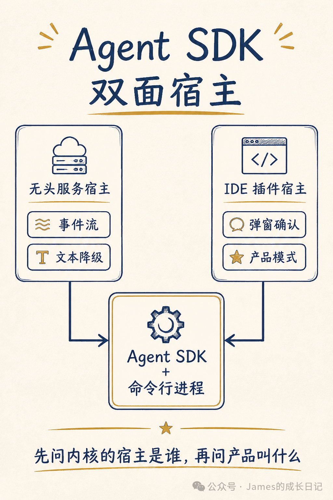
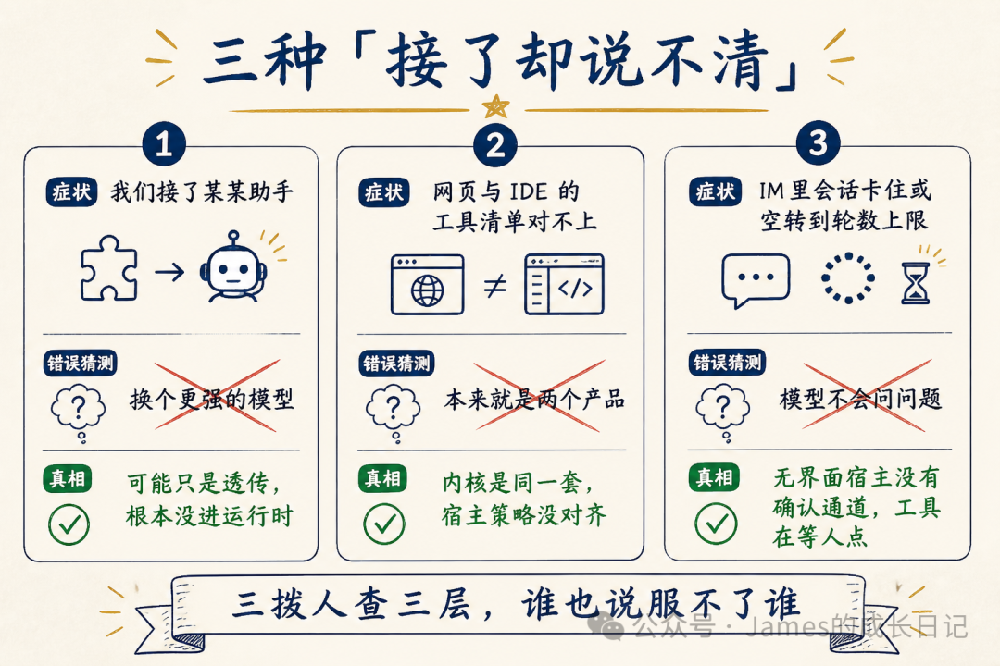
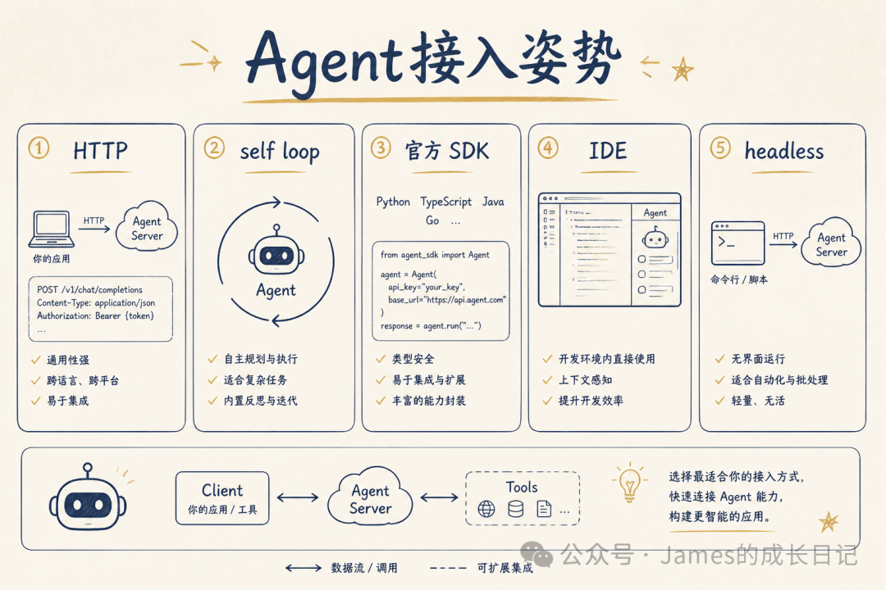
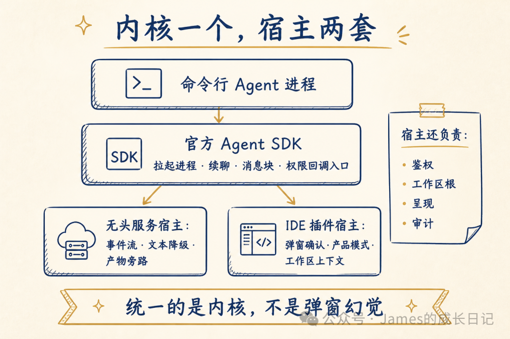
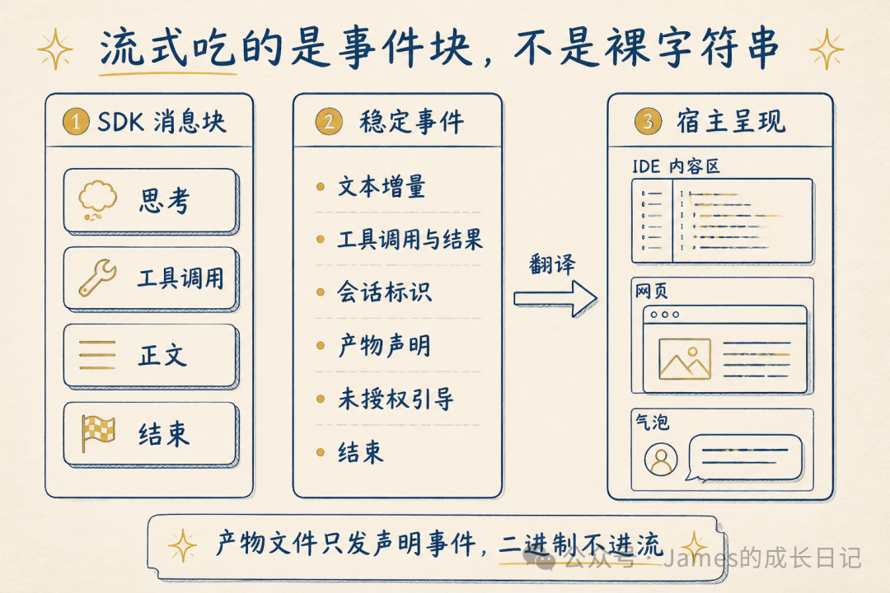
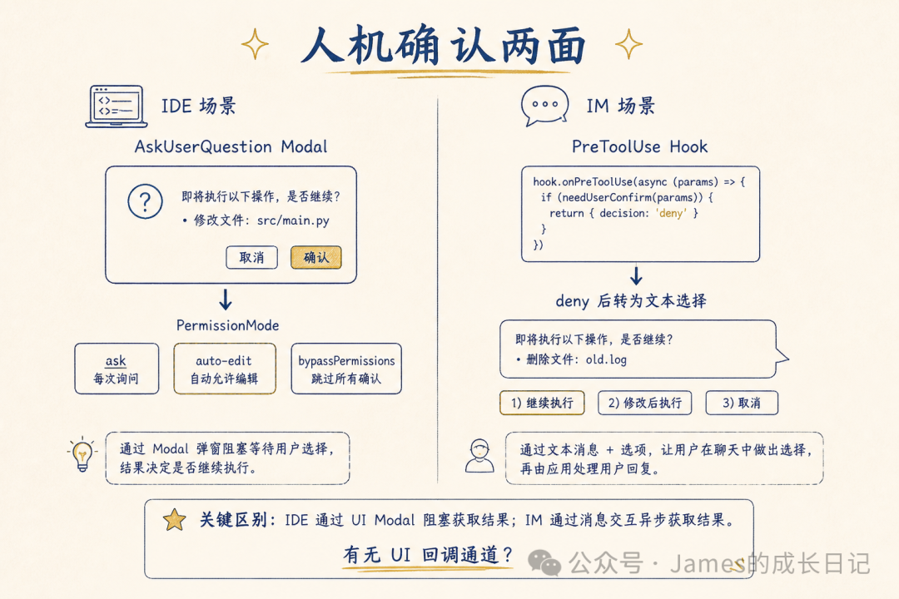
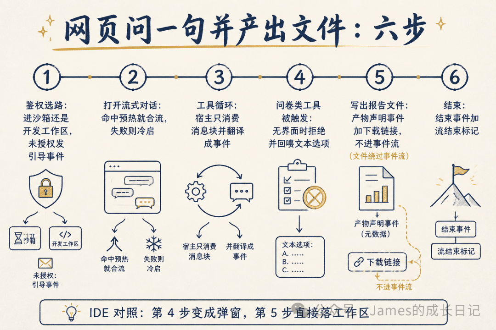
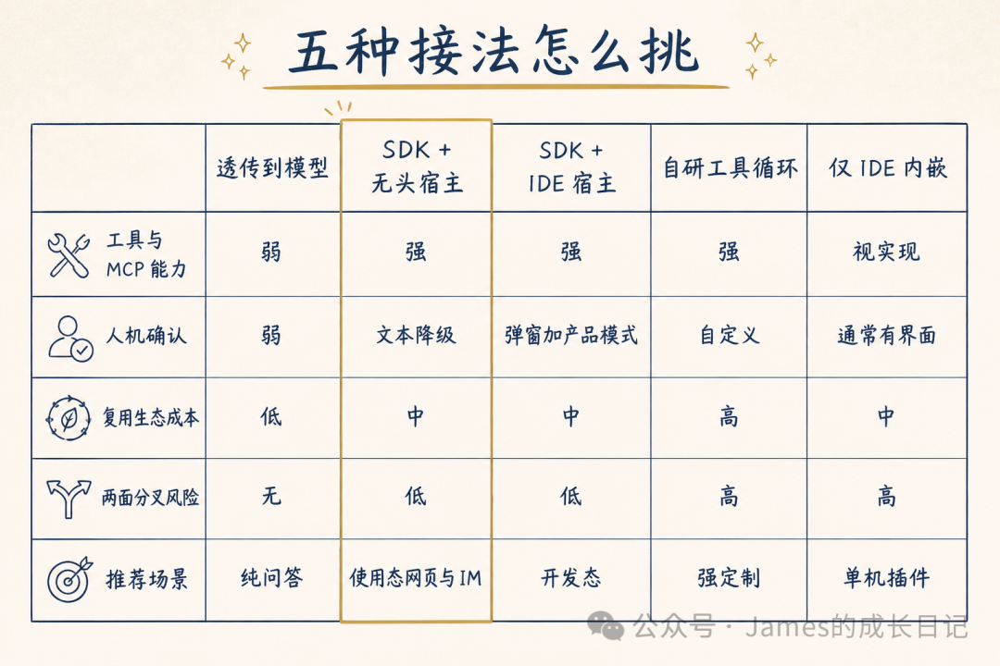
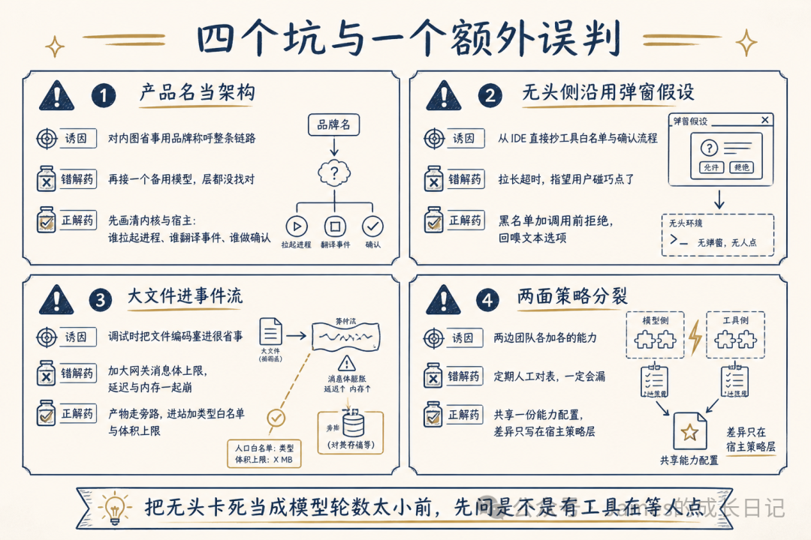

Agent SDK 双面宿主：有 UI 与无 UI 不是两套 Agent
来源：微信公众号 归档日期：2026-10-05 抓取状态：成功 原文字符：9657｜配图：9 张
摘要速览
- 大家好，我是 James。国庆假期第五天了～ 上一篇讲了 企微气泡：显示坏了先查展示层——出口怎么把事件变成用户看得懂的东西。 今天回到内核。真正跑 Agent 的是 Code 类 Agent SDK 加命令行进程，网页、IM 与 IDE 都只是宿主。这句话我是在踩过坑之后才真正接受的：有一次我们讨论「IM 里的工具清单为什么和 IDE 对不上」，我坚持认为是两个团队各写了一份能力，花了一周去对表。最后发现内核是同一套，工具栏不
核心内容
（待补充）
可执行启发
（待补充）
我的想法
（待补充）
原文沉淀
目录
- 现场 A：产品名当架构
- 现场 B：把两面当成两套 Agent
- 现场 C：IM 里仍然假设有弹窗
- 不变量
- 与出口篇的边界
- IDE 面对照
- 编排在内核，策略在宿主
- 生成的文件必须旁路
- 坑 1：产品名当架构
- 坑 2：无头侧沿用弹窗假设
- 坑 3：大文件进事件流
- 坑 4：两面的工具与权限策略分裂
- 额外误判
来源：https://mp.weixin.qq.com/s/X8C9tJ41TtOBgVSNod7sYg 平台：weixin｜作者：James的成长日记 抓取方式：cdp｜字符数：11026｜图片：9
大家好，我是 James。国庆假期第五天了～
上一篇讲了 企微气泡：显示坏了先查展示层——出口怎么把事件变成用户看得懂的东西。
今天回到内核。真正跑 Agent 的是 Code 类 Agent SDK 加命令行进程，网页、IM 与 IDE 都只是宿主。这句话我是在踩过坑之后才真正接受的：有一次我们讨论「IM 里的工具清单为什么和 IDE 对不上」，我坚持认为是两个团队各写了一份能力，花了一周去对表。最后发现内核是同一套，工具栏不一样只是因为宿主策略没对齐——该对的表在宿主层，我却带着人去内核层找。
产品名不等于架构。分不清这两件事，排障时三拨人会分别去查网关、查模型配额、查气泡，然后谁也说服不了谁。

先花一分钟对齐几个词
| 词 | 说人话是什么意思 |
|---|---|
| Agent SDK + 命令行进程 | 真正跑工具循环的内核，负责调用工具、迭代消息块 |
| 宿主 | 把内核接进某个使用环境的外壳：网页 / IM / IDE 各是一个宿主 |
| 有 UI 宿主 / 无头宿主 | 前者有弹窗可以问人（IDE），后者没有（网页、IM、自动化） |
| 消息块流 | SDK 吐出来的是一个个消息块，不是一个越来越长的字符串 |
| 呈现 | 宿主把消息块翻译成自己出口能表达的事件 |
| 人机确认通道 | 工具需要人拍板时，人能从哪里看到并回应 |
| 文本降级 | 没有弹窗时，用选项文本把问题回喂给模型与用户 |
| 产物旁路 | 生成的文件不塞进事件流，走独立下载通道 |
（CLI、SSE、SDK、MCP、Modal、Hook、MIME 这类通用名词就不解释了。）
01 | 三种「接了却说不清」

把内核和宿主的关系想成同一位厨师，同时做堂食和外带：
| 堂食 | 外带 | |
|---|---|---|
| 谁做菜 | 同一位厨师 | 同一位厨师 |
| 能不能当面问客人 | 能，走到桌边问「要辣吗」 | 不能，只能在订单上印选项 |
| 客人怎么回应 | 当场点头 | 打电话或按选项回复 |
| 汤和面怎么装 | 一碗端上来 | 分盒装 ，不能把汤倒进面袋 |
| 服务员要做什么 | 摆盘、上菜、传话 | 打包、贴标签、写清食用说明 |
厨师就是内核（SDK + 命令行进程），服务员就是宿主。 两边共用同一个厨房，但服务方式必须分开设计。
这个类比直接解释本篇的三个核心判断：
- 不要因为「外带不能当面问」就另开一个厨房。 那是维护两套内核，成本会在第三个月开始反过来拖垮你。
- 堂食能当面问，外带只能在订单上印选项。 这就是「有弹窗走弹窗、没弹窗走文本降级」。在外带单上写「请当面回答服务员」，顾客永远看不到。
- 汤和面必须分盒。 大文件不能塞进事件流——就像你不能把汤倒进装面的袋子里。
做 Agent 平台时，最贵的不是接错模型，而是能力接对了、却讲不清自己接的是哪一层。三种迷路我几乎每个团队都见过。
现场 A：产品名当架构
同事口头说的是「我们接了某某 Code」「我们上了某某助手」。追问一句：是把提示词透传给模型，还是用官方 SDK 拉起本地命令行进程、跑真正的工具循环？答不上来。于是排障时有人查网关、有人查模型配额、有人查气泡，三拨人查三层，谁也对不上。
这时候最常见的误判是「换个更强的模型就好了」。真相往往更尴尬：你可能根本没走到 Agent 运行时，只是走了一层很薄的对话代理。
现场 B：把两面当成两套 Agent
现象是网页端能用某一批工具，IDE 里是另一批，权限策略两边各写一份，慢慢开始分叉。误判是「使用态和开发态本来就是两个产品」。真相是内核常常是同一套 SDK 加命令行进程，分叉的是宿主策略层没对齐。而维护两套内核的成本，通常在第三个月开始反过来拖垮团队。
现场 C：IM 里仍然假设有弹窗
现象是同一批工具在 IDE 里弹窗很顺手，到了企微或网页的无头链路里触发之后，会话就卡住了，或者空转到轮数上限才停。误判是「模型不会问问题」或者「IM 通道丢包」。真相是无头宿主既没有终端界面，也没有弹窗回调通道；不做降级，工具就会停在「等人点」的状态里死等，而人根本看不见那个按钮。
用户要的是「帮我干活」，不是「请假设到处都有弹窗」。
同一套内核，有 UI 与无 UI 的宿主各自要多做哪几件事，才不会把能力做成事故——这就是本篇要回答的。
02 | Agent 接入的几种姿势

横评之前先问清楚：你要的是「会回答」，还是「会在工作区里干活」？
| 姿势 | 形态 | 强项 | 短板 | 适合 |
|---|---|---|---|---|
| 透传到模型 | 无本地工具循环 | 简单、首字快 | 带不动工作区里的 Agent | 纯问答 |
| 自研工具循环 | 完全可控 | 协议可裁剪 | 成本极高，容易与生态脱节 | 强定制平台 |
| 官方 SDK + 命令行进程 | 复用成熟的工具与 MCP | 工程默认选项 | 要懂宿主适配 | 大多数「能干活」的产品 |
| 仅 IDE 扩展内嵌 | 有界面、有工作区 | 确认体验好 | 覆盖不了 IM 与 API | 开发态 |
| 仅无头服务 | 事件流，无弹窗 | 覆盖网页 / IM / 自动化 | 人机确认必须降级 | 使用态 |
摘要：能复用 SDK 就别自研第二套循环，那是巨大的浪费。但宿主策略必须分开设计——有弹窗的确认通道，抄不到没有弹窗的场景上。
偷三样：官方 SDK 的工具循环、消息块流、权限回调入口；IDE 侧的弹窗产品感；无头侧的文本降级思路。 拒三样：为了「统一体验」在无头宿主假装有弹窗；为了「两边独立」维护两套分叉的内核；把大文件塞进事件流当成「简单处理」。
03 | 内核一个，宿主两套

工具循环、MCP 调用、消息块迭代是同构能力，所以内核应该共享同一套 SDK 加命令行进程，而不是各写一套编排。网页与 IM 没有可靠的弹窗而 IDE 有，所以人机确认必须按宿主分流，不能两边抄同一份。出口形态也不同——有的是事件流，有的是编辑器里的块，有的是气泡——所以呈现是宿主的义务，不是 SDK 的义务。
| 面 | 形态 | 典型用户 | 宿主多做什么 |
|---|---|---|---|
| 无头服务宿主 | 事件流，进程内连接池 | 网页 / IM / 对外接口 | 鉴权选路、池化与取消作用域、事件呈现、文本降级、产物旁路 |
| IDE 插件宿主 | 扩展 + 内嵌界面，随包命令行进程 | 开发态 | 权限弹窗、多会话管理、工作区上下文、进程与持久化 |
┌──────────────────────┐
│ 命令行 Agent 进程 │
└──────────▲───────────┘
│ 启动 / 标准输入输出
┌──────────┴───────────┐
│ 官方 Agent SDK │
│ 查询 / 消息块 / 权限回调 │
└──────▲───────▲───────┘
┌───────────┴──┐ ┌──┴────────────┐
│ 无头服务宿主 │ │ IDE 插件宿主 │
│ 事件流 / 文本降级│ │ 弹窗 / 产品模式 │
└──────────────┘ └───────────────┘SDK 负责：拉起命令行进程、续聊、消息块迭代、工具权限回调入口、部分钩子。 宿主负责：身份与鉴权、工作区根、协议呈现、无界面降级、产物旁路、审计、与池和预热的合流。
回到餐厅：厨师只管把菜做出来，摆盘、打包、写食用说明、传话都是服务员的活。 让厨师去打包，或者让服务员自己开火炒菜，两边都会乱。
先问 Agent SDK 宿主是谁，再问产品叫什么。
04 | 流式吃的是事件，不是裸 token

不变量
SDK 吐出来的是消息块流，不是一个越来越长的字符串。宿主必须把它翻译成自己出口协议能表达的事件。
无头侧常见的事件类型（示意）：
| 事件 | 含义 | 边界 |
|---|---|---|
text / thinking | 正文与思考增量 | 清洗危险标签 |
tool_use / tool_result | 工具调用与结果 | 连续的只读操作可以合并 |
system | 权威会话标识等 | 客户端以此为准 |
output_file | 产物声明 | 二进制不进事件流 |
auth_required_panel | 未授权引导 | 不干等终端登录 |
error / result | 失败与结束 | result 应当可预期地出现 |
| 流结束标记 | 例如 [DONE] | 与 result 成对理解 |
网页与企微还有各自的二次呈现（见上一篇气泡），所以本层要先把 SDK 的消息块洗成稳定事件，再交给出口。坏掉的正则或贪婪清洗有可能卡死事件循环，所以呈现逻辑必须有超时与失败降级——「把链接美化一下」不该变成整条流假死。
// 示意 · TypeScript
// 保证：按消息块渲染；大文件不进事件流；清洗失败不堵死流
type ChatEvent =
| { type: "text"; delta: string }
| { type: "thinking"; delta: string }
| { type: "tool_use"; name: string }
| { type: "output_file"; path: string; url: string }
| { type: "auth_required_panel"; reason: string }
| { type: "result" }
| { type: "error"; message: string };
function project(block: SdkBlock): ChatEvent[] {
// 剥离产物标签 → 改写成 output_file 事件
// 改写工作区链接 → 失败则原文透传，不要卡死
return [];
}
async function* streamChat(sdk: AsyncIterable<SdkBlock>) {
for await (const block of sdk) {
for (const ev of project(block)) yield ev;
}
yield { type: "result" } satisfies ChatEvent;
}# 示意 · Python
# 保证：无头侧把消息块翻译成事件；结束事件可预期出现
from typing import AsyncIterator, Dict, Any
async def project_stream(blocks: AsyncIterator[dict]) -> AsyncIterator[Dict[str, Any]]:
async for block in blocks:
for event in project_block(block): # 清洗标签、改写链接
yield event
yield {"type": "result"}与出口篇的边界
本篇管的是「SDK → 宿主事件 / IDE 消息块」；上一篇管的是「宿主事件 → 气泡的四道约束」。两边都在做呈现，但层次不同。混在一块排障，只会原地打转。
IDE 面对照
IDE 通常按内容块渲染，连续的只读操作可以合并，复制给用户时丢掉过程块。文件更常直接落进工作区，但仍建议保留「产物声明」事件，方便界面展示。
05 | 人机确认取决于有没有通道

这是两面差异最大的一个维度。
IDE 有内嵌界面可以弹窗，所以权限请求、问卷类工具、模式切换可以走真正的人机回路。IM 与无头链路没有终端界面，所以同一个工具触发时必须拒绝并回喂可选项文本，或者走引导面板——否则就是人看不见的死等。
这里有个实现上的坑值得单说：「拒绝并回喂选项文本」这条通路，光写代码是不够的。软拒绝的回调已经实现了，但只要这类工具还在默认的禁用清单里，命令行工具会在更前面就从协议层把它剔掉，模型压根看不到这个工具，也就拿不到回喂的选项。所以正确的顺序是先把这类工具从禁用清单里放出来，再谈回喂——只实现回喂而不放开，等于做了个永远不会被调用的分支。
回到餐厅：堂食可以走到桌边问「要辣吗」，外带只能在订单上印「辣度：1 微辣 2 中辣」；在外带单上写「请当面回答服务员」，这单就永远卡在那儿了。共享工作区被误写的代价极高，所以 IDE 里「全自动放行」不是体验好，是事故。
| 点 | 有界面（IDE） | 无界面（网页 / IM） |
|---|---|---|
| 权限确认 | 弹窗或权限模式 | 策略放行、黑名单，或文本选项 |
| 问卷类工具 | 专用弹窗，不进自动白名单 | 调用前拒绝并回喂文本选项 |
| 未授权 | 引导登录或绑定界面 | 未授权引导事件，不干等终端登录 |
| 产品模式 | 谨慎模式 / 自动编辑等 | 通常更保守；可配置放行但必须审计 |
// 示意 · TypeScript · IDE 宿主
// 保证：弹窗挂起时消息泵不阻塞；问卷类工具永不自动放行
async function onPermission(req: PermissionReq): Promise<Decision> {
if (req.tool === "AskUserQuestion") {
return showQuestionModal(req); // 专用界面，不进自动放行
}
return showPermissionModal(req);
}# 示意 · Python · 无头宿主
# 保证：无界面时拒绝问卷类工具并回喂选项文本，避免卡死
async def pre_tool_use(name: str, payload: dict) -> dict:
if name in {"AskUserQuestion", "ExitPlanMode"}:
return {
"decision": "deny",
"reason": "当前通道没有弹窗。请用文本回复选项，例如：1) … 2) …",
}
return {"decision": "allow"}编排在内核，策略在宿主
核心的工具循环仍在 SDK 里，宿主叠加的是策略点：
| 策略点 | 无头面 | IDE 面 |
|---|---|---|
| MCP | 每轮同步签名；变更则重建 | 用户级与项目级配置 + 共享作用域 |
| 会话 | 续聊或领取已有连接 | 多通道会话管理 |
| 并发 | 同一匹配键串行；新请求踢掉旧一轮 | 多通道；启动许可 |
| 旁路 | 钩子加文件监视，产出产物事件 | 编辑器上下文与引用 |
同一会话的并发处理遵循同一个哲学：新请求踢掉旧一轮，不要让两条标准输入抢同一个进程。
生成的文件必须旁路
数兆二进制会把事件流和气泡一起撑爆。进站走收件箱（受控编码加类型白名单）；出站识别到产物标签就挪到会话目录，发出产物声明事件加下载链接。标签进事件声明，文件走旁路下载。
生成文件可以用双通道感知（SDK 钩子加系统层文件监视），但上报必须旁路，不能堵在主事件循环上。
06 | 网页问一句并产出文件，走一遍全过程

端到端走一遍，带决策点。
- 鉴权选路 — 决策：进沙箱工作区还是开发工作区？未授权就发引导面板事件，而不是假装已登录去干等终端界面。
- 打开流式对话 — 领取或冷启连接。决策：命中预热就合流，失败就冷启——提速手段不是开聊的前提。
- 查询进入工具循环 — 循环跑在 SDK 内，宿主只消费消息块并翻译成事件。决策：呈现失败时是降级透传还是中断？优先不堵死流。
- 问卷类工具被触发 — 决策：有没有界面？无头侧拒绝并回喂文本选项，不要空等弹窗。
- 写出报告文件 — 决策：塞进事件流还是旁路？走产物声明事件加下载链接；到了 IM 出口再按上一篇的做法关泡后发媒体。
- 结束 — 结束事件加流结束标记；网页渲染事件，企微再翻译成气泡。
IDE 对照：第 3 到 5 步发生在扩展宿主里；第 4 步变成弹窗；第 5 步更常直接落进工作区，但事件声明仍建议保留。
如果当初按「到处都有界面」来设计无头侧，第 4 步会变成用户看不见的死等；如果大文件进了事件流，第 5 步会把事件循环撑爆。两面共享内核，但绝不共享「到处都有弹窗」这个幻觉。
07 | 选型：五种接法怎么挑

| 维度 | 透传到模型 | SDK + 无头宿主 | SDK + IDE 宿主 | 自研工具循环 | 仅 IDE 内嵌 |
|---|---|---|---|---|---|
| 工具与 MCP 能力 | 弱 | 强 | 强 | 强 | 视实现 |
| 人机确认 | 弱 | 文本降级 | 弹窗 + 产品模式 | 自定义 | 通常有界面 |
| 复用生态成本 | 低 | 中 | 中 | 高 | 中 |
| 两面分叉风险 | — | 低（共享内核） | 低 | 高 | 高（与无头难对齐） |
| 推荐场景 | 纯问答 | 使用态网页与 IM | 开发态 | 强定制且有编制 | 单机插件 |
什么时候选谁：
- SDK + 双宿主：要同时服务 IM、网页与 IDE，又希望工具能力一致——默认架构。
- 透传到模型：只问答，不改环境。
- 自研工具循环：有强合规裁剪需求，并且愿意长期养一套编排——慎选。
- 只做 IDE：入口永远是编辑器；但一旦要接企微，还是会回到双宿主问题。
08 | 四个坑与一个额外误判

坑 1：产品名当架构
诱因：对外品牌好记，对内图省事就用品牌称呼整条链路。 错解药：再接一个「备用模型」——层都没找对。 正解药：先画清内核与宿主的图：谁拉起命令行进程、谁翻译事件、谁做人机确认。口述不清就先别开工。
坑 2：无头侧沿用弹窗假设
诱因：从 IDE 直接抄工具白名单与确认流程。 错解药：拉长超时，指望用户「碰巧」在别的地方点了——不会的。 正解药：无头侧用黑名单加调用前拒绝，并回喂文本选项；未授权走引导面板。回到餐厅：外带窗口没有服务员站在客人桌边，你把「请问要辣吗」写在单子上，然后站在窗口一直等——等到打烊也不会有人回答。
坑 3：大文件进事件流
网页调试时把文件编码一下塞进流里很省事，代价是网关的消息体上限一路加大，延迟和内存一起崩。正解是产物走旁路（声明事件加下载链接），进站侧加类型白名单与体积上限。
坑 4：两面的工具与权限策略分裂
两边团队各加各的能力，没有共享的配置模型，于是靠定期人工对表——一定会漏。正解是共享一份「能力与风险等级」配置，差异只写在宿主策略层（弹窗还是文本），绝不写两套内核。
额外误判
把无头侧的卡死当成「模型轮数上限太小」。先问一句：是不是有个问卷类工具正在等人点？
最后交代一下这篇的位置。同一套内核要同时服务有界面的人和没有界面的自动化流程，这是 Agent 工程化里工具链集成那一类问题：内核一旦按宿主分叉，工具清单和权限策略就跟着分叉，对表的成本要一直付下去。反过来，宿主层收干净了，内核新增的能力才能一次落到网页、IM 和 IDE 三个出口上。
总结
- 先问内核的宿主是谁，再问产品叫什么。 产品名不是架构。
- 内核共享工具循环，宿主负责呈现与策略。 维护两套内核是纯粹的额外负担。
- 有界面走弹窗，没有界面走文本降级。 确认通道决定产品形态。
- 流式吃的是事件块，大文件走旁路。 裸字符串的思维会把事件流和气泡一起搞坏。
- 不要为了统一体验抄错确认通道。 统一的是内核，不是弹窗幻觉。
先问内核的宿主是谁，再问产品叫什么——有界面走弹窗，没有界面走文本降级。
下一篇我会写 Claudix 式 IDE 对话插件：从聊天框到能停干净、能活过重启的三进程工程。
关注我，James 的成长日记，持续分享干货，帮你在 AI 时代少走弯路。
归属：[[02-输入/按主题/AI与效率/_index|AI与效率]]